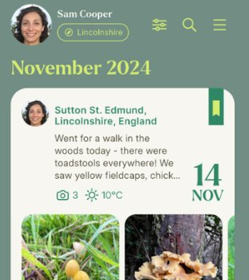
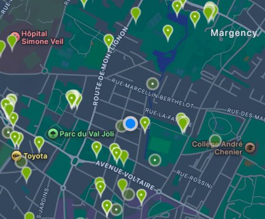
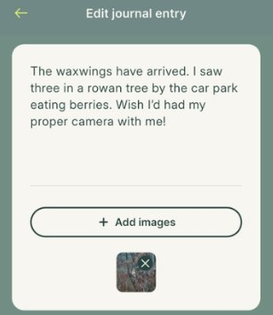
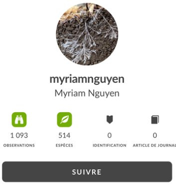
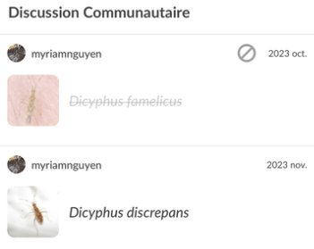

L'analyse révèle que les applications naturalistes construisent une expérience pré-formatée du vivant. L'utilisateur ne découvre pas la nature : il suit un parcours balisé.
Les espèces sont réduites à des unités identifiables, quantifiables, collectionnables. La biodiversité devient un catalogue à remplir, une progression à compléter.
→ La spontanéité de la rencontre avec le vivant disparaît au profit d'une logique de rendement.
« navigation guidée »
« logique GPS »
« standardisation de l'observation »
« production de contenu »

Interface type

Cartographie balisée
→ la nature devient un produit ?
GRILLE 2
Grille 2 — L'utilisateur, un acteur conditionné
L'utilisateur est guidé dans ses gestes, ses itinéraires et sa manière d'observer. Les applications imposent des cadres cognitifs et comportementaux.
Le design persuasif — notifications, gamification, récompenses — crée un conditionnement subtil qui transforme l'exploration en tâche à accomplir.
→ L'autonomie de l'observateur est progressivement remplacée par l'obéissance au système.
« gamification ? »
« notifications push »
« récompenses virtuelles »
« design persuasif »

Création de posts

Profil utilisateur
Jusqu'où va le conditionnement ?
GRILLE 3
Grille 3 — Médiation sociale et numérique
Les applis créent des communautés virtuelles qui remplacent progressivement les formes traditionnelles de transmission des savoirs naturalistes.
La validation sociale (likes, partages, classements) influence ce qui est observé et comment c'est documenté. Le spectaculaire l'emporte sur le subtil.
→ La médiation numérique reconfigure les relations sociales autour de la nature.
« validation sociale »
« likes & partages »
« communautés en ligne »
« savoirs fragmentés »

Discussion communautaire
Quelle place pour l'expérience directe ?
HYPOTHÈSES
Hypothèse 1
✔ Validée
« Le vivant est réduit à des unités identifiables, quantifiables et collectionnables par les interfaces numériques. »
Les données confirment une approche systématique de réduction de la complexité écologique en éléments discrets.
Hypothèse 2
~ Nuancée
« La dimension esthétique et scientifique est présente mais instrumentalisée au service de l'engagement utilisateur. »
Résultat mixte : certaines applis intègrent une réelle pédagogie, d'autres la simulent.
Hypothèse 3
✔ Validée
« L'utilisateur adopte une posture d'observateur guidé plutôt que d'explorateur autonome. »
Les parcours prédéfinis et les systèmes de récompense orientent fortement le comportement.
⚡ Résultats clés
PISTES DE SOLUTIONS
🔍 Piste 1 — Enquête interactive
Transformer la reconnaissance du vivant en enquête interactive. Guider l'utilisateur à travers observations et choix : formes, textures, environnement.
→ Le vivant n'est plus un objet à scanner mais un phénomène à interpréter.
Une cartographie interactive où les espèces sont reliées entre elles et à leur environnement. Chaque observation s'inscrit dans un réseau de relations.
→ L'application permet aussi d'agir : signaler, suivre, préserver.